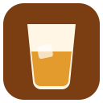
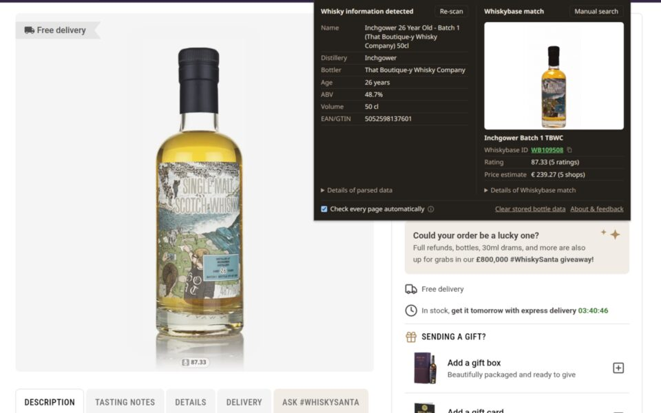

Bottle lookup for Whiskybase
Spots whisky bottles on the pages you visit, in shops and auctions, and looks them up on Whiskybase.
Two steps to get the most out of it
-
Pin the extension to the toolbar
Your browser hides new extensions behind the Extensions button, on the right of the address bar. Click it, then click the pin next to Bottle lookup for Whiskybase. The extension icon then stays pinned to the toolbar, one click away on any page.
-
Let the extension check every page automatically
By default, the extension only has permission to look at pages when you click the extension's icon. It's much more powerful when you allow it to automatically check pages as they load: bottle information is immediately annotated (examples below), and directly matched to Whiskybase.
Your browser will ask whether the extension may read and change all your data on all websites. That is how browsers word access to every page; the extension uses it only to look for bottle details, and to add the glass and badges.
On: every page is checked when it loads. You can turn this off in the extension's popup.
Not allowed. You can turn it on later with the checkbox at the bottom of the extension's popup.
What to expect
On a page about a bottle, the extension reads its details (distillery, age, ABV, vintage, bottler, and so on) and finds the bottle on Whiskybase. Click the extension's icon to see what it found next to the Whiskybase match, with its rating and price estimate.
Once a bottle is recognised, the page itself shows it too, very subtly:
- a faint glass after the bottle's name;
- a small badge with the Whiskybase rating on the bottle's photo;
- the same badge on lists of bottles, for the bottles it has matched before.
Clicking any of these opens the extension.

Suggestions? Check the GitHub repository!
The extension is open source: its code is on GitHub. Missing a feature, or a bottle that isn't recognised? Ask for an improvement by opening an issue. And if you write code, you're welcome to suggest changes with a pull request.
Your privacy
The extension has no servers of its own and collects nothing. Pages are read in your browser. Only when a bottle is recognised, its details are sent to Whiskybase as a search; the matches it remembers (for the badges on lists of bottles) stay in your browser.